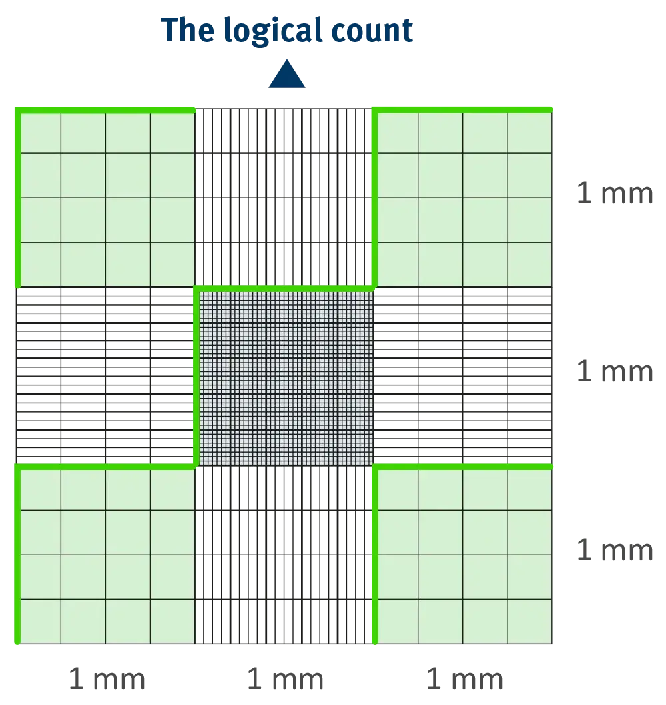
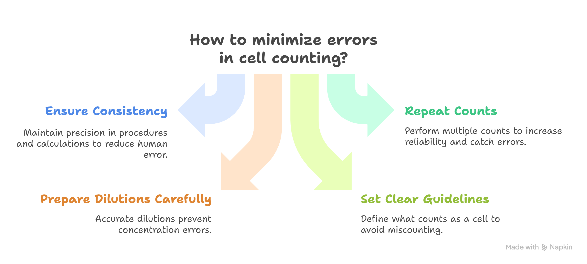

Experiment 10: Introduction to Hemocytometry
Aim
Introduction to hemocytometry.Requirements
- Hemocytometer (Neubauer’s counting chamber)
- RBC diluting pipette
- WBC diluting pipette
- RBC diluting fluid
- WBC diluting fluid
References
Practical Handbook of Human Anatomy and Physiology by S.R. Kale. Nirali Prakashan, Eighth Edition, 2002, Page 11-12.Introduction
Hemo for blood, cyto for cell; meter for measuring or counting. So, altogether it is for counting or measuring the blood cells.
It is a device used for determining the number of cells per unit volume of suspension is called a counting chamber. It is the most widely used type of chamber which is used for performing blood cell counts.
Haemocytometers set consist of:
- Neubauer’s Counting chamber
- Diluting pipetter (RBC and WBC)

Neubauer’s Counting Chamber
It is a thick glass slide with two identical ruled areas separated by empty space and having two elevated ridges on their both sides. Either of the ruled areas is used for counting the cells. The counting square is of 9 sq.mm area (3mm × 3mm). The four corner squares of area 1 sq.mm. each (1mm × 1mm) are used for white blood cell count. In this the triple lines which dividing the central large square are very much closer to each other. The central ruled area is divided into 25 large squares. These squares are subdivided to form 16 smaller squares each with an area of 1/400 of 1 sq.mm. The four corners and one middle subsquares are used for red blood cell count. The depth of improved neubauer chamber is same that is 0.1mm.
Diluting Pipette
It is a glass tube pipette with rubber sucking arrangement. The tubular part of the pipette is graduated from 0 to 1 with the division of 0.1 units. The bulb portion can accommodate 100 units of volume graduated from 1 to 101 on both sides of the bulb. Bulb serves as diluting and mixing chamber for blood.
| Feature | RBC Pipette | WBC Pipette |
|---|---|---|
| Bead Colour | Red | White |
| Markings | 0.5, 1, 101 | 0.5, 1, 11 |
| Dilution Ratio | 4:20 | 1:20 |
Diluting Fluids
RBC Diluting fluids
- Sodium chloride: Maintains osmolarity and isotonicity
- Sodium sulfate: Prevents RBC aggregation, acts as an anticoagulant, and acts as a fixative
- Mercuric chloride: Acts as a preservative, is antifungal and antibacterial, and prevents contamination by microorganisms
- Glacial acetic acid: Used in some RBC diluting fluids
RBC diluting fluids are used to dilute blood prior to counting red blood cells with a hemocytometer.
WBC Diluting fluids
- Glacial acetic acid: 2.0 milliliters
- Distilled water: 97.0 milliliters
- Gentian violet: 1.0 gram (1% w/v)
WBC diluting fluid is used to perform a WBC count. The glacial acetic acid in the solution lyses red blood cells, while the gentian violet stains the nuclei of white blood cells.
Procedure
- Clean the hemocytometer and the cover glass with ethanol. Ensure the ethanol evaporates completely, so it does not affect your cells.
- Place the cover glass on top of the hemocytometer’s chambers to stop your sample from evaporating.
- Load 10 µl of your stained sample into one or both counting chambers with a micropipette. Capillary action ensures even distribution of the suspension within the chamber.
- Place the hemocytometer under the microscope.
- Adjust the microscope’s focus until you can clearly see the cells.
- Count the cells using a tally counter (see below for details about the rules of cell counting using a hemocytometer). Keep track of the total number of cells and the number of dead cells.
- When you are finished, clean the hemocytometer and the cover glass with ethanol.

Precautions
Cell counting with a hemocytometer is typically error-prone, with errors often as high as 20-30%. Common sources of error range from human error with procedures and calculations, to errors caused by non-uniform cell staining and cell debris.
You can minimize errors by ensuring you work as consistently and precisely as possible. Take care to prepare dilutions correctly, pipette carefully, set clear counting guidelines, and be diligent about what you count as a cell. Remember, consistency is king! Performing additional counts can also ensure that your results are reliable and may help you catch errors before it’s too late. Typically, we repeat all cell counts three times, but “when in doubt, do another count!”
